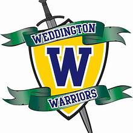
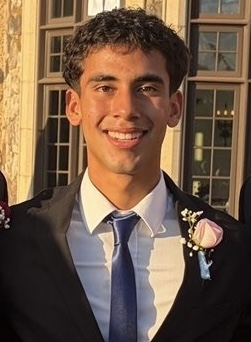
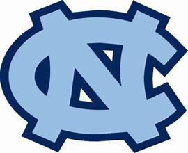
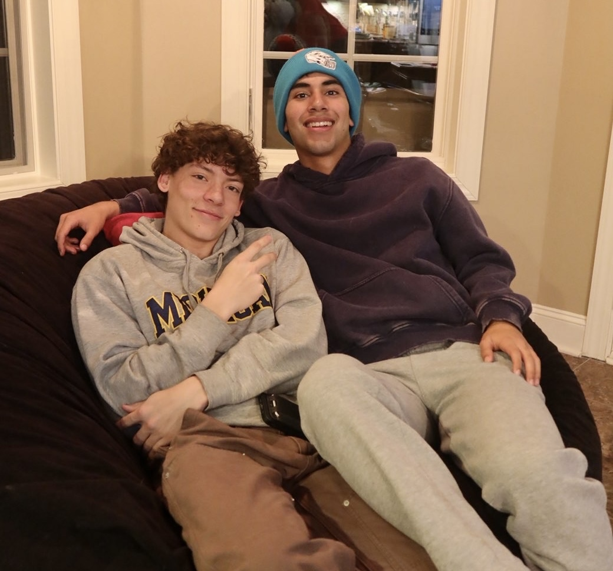
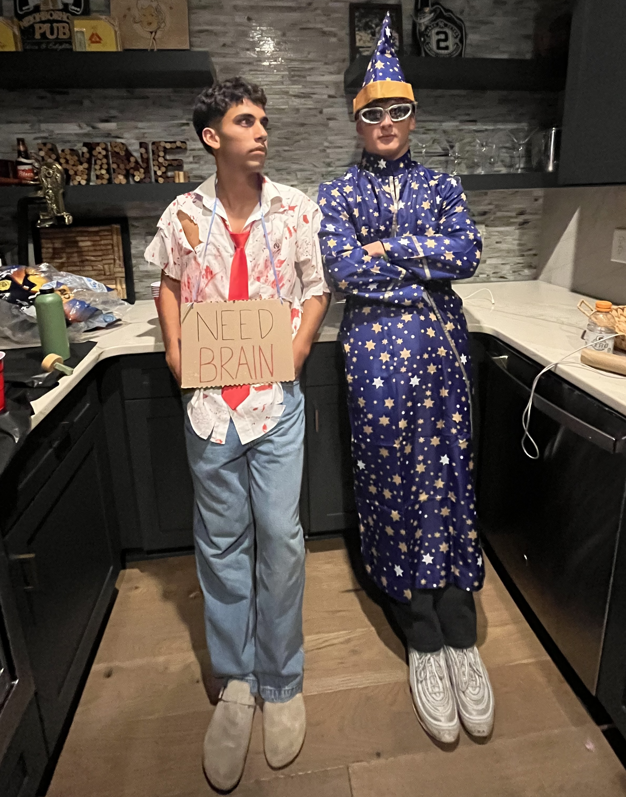
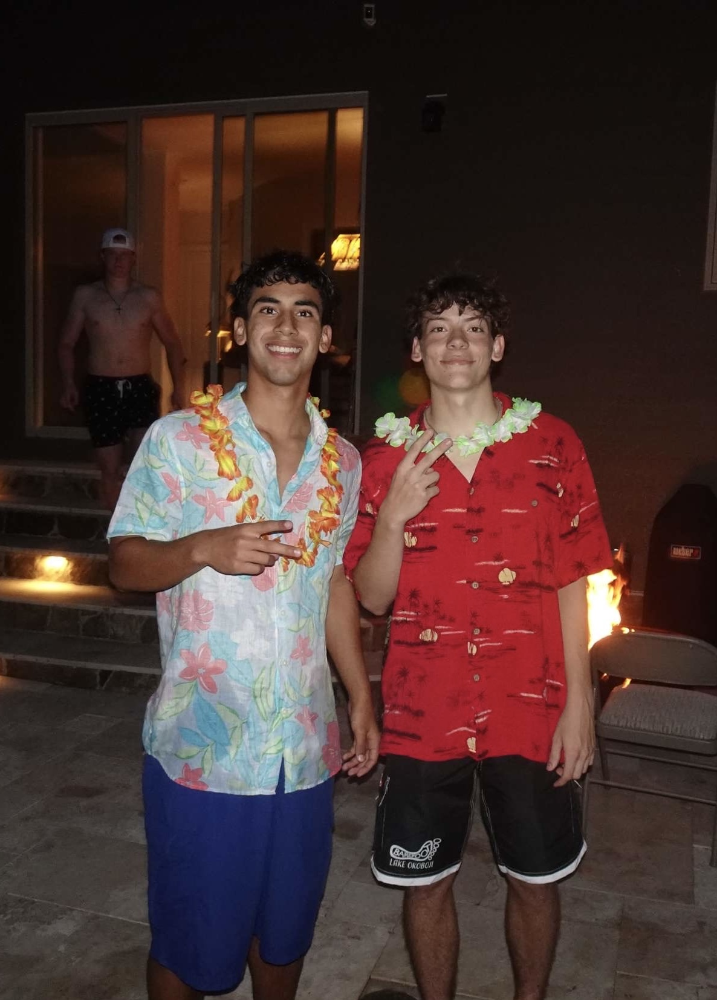
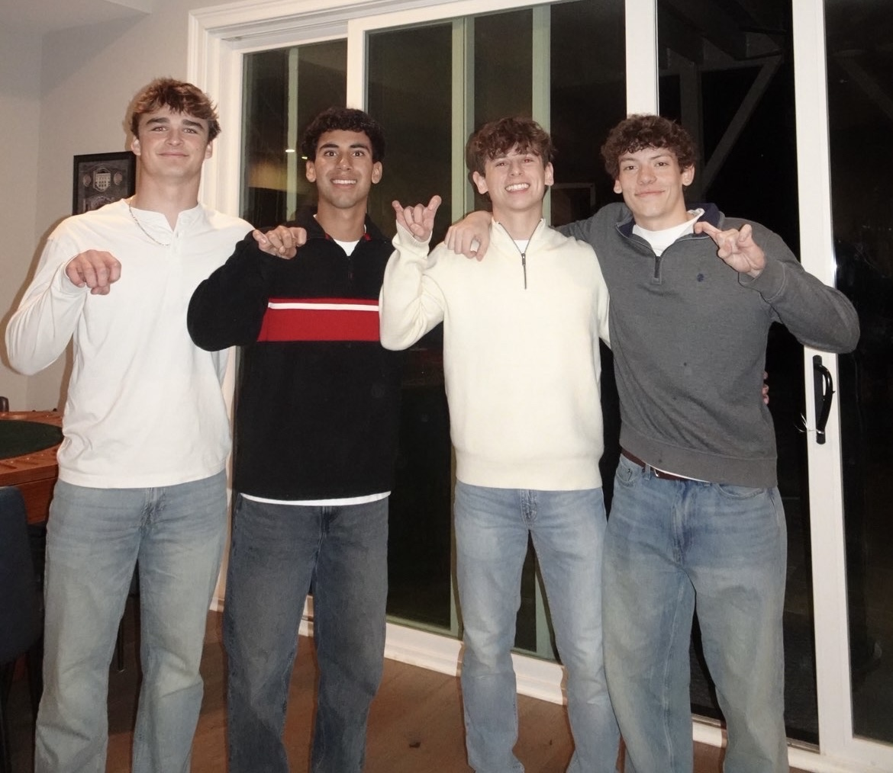
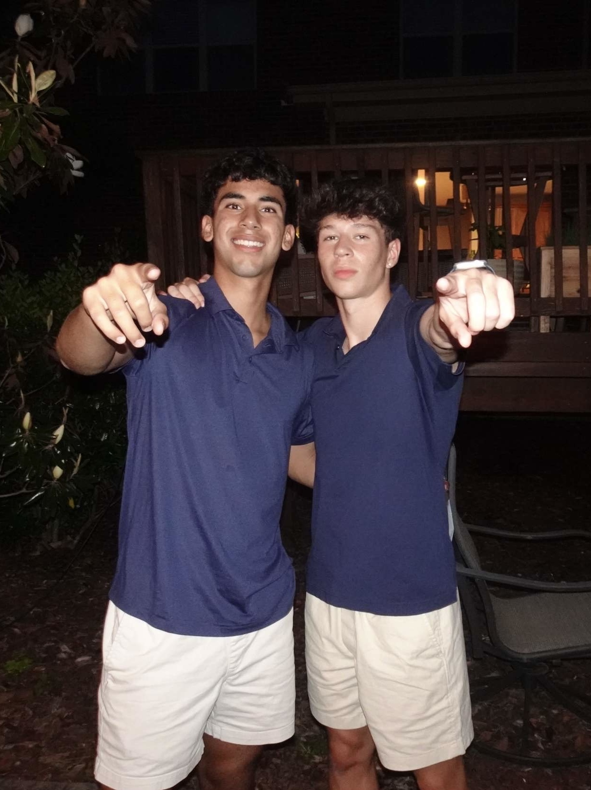
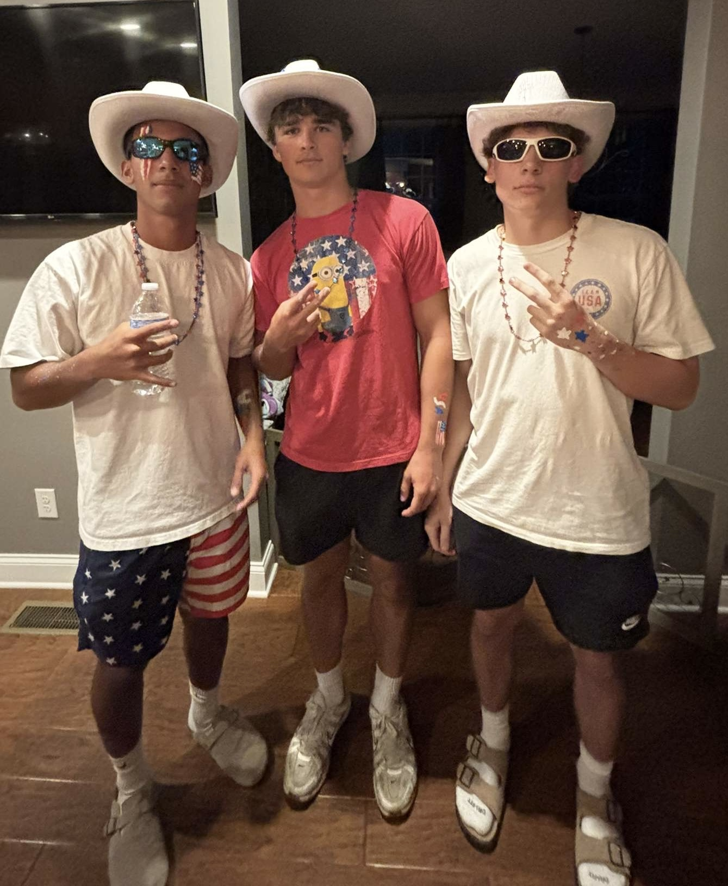
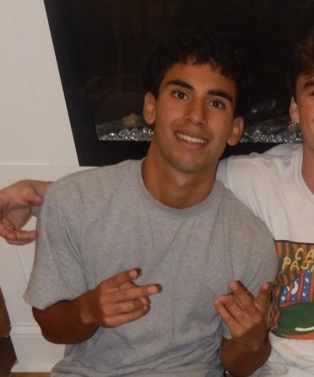

About Zack



Zack Ortiz is a Senior at Weddington High School. He will be attending UNC Chapel Hill in Fall 2026.
This website highlights his passion for sports, music, and fashion. It will give visitors a deeper look into who Zack is.
Quick Stats
Age: 17
Height: 5'10"
HS Graduation: 2026
College Graduation: 2030
Intended Major: Undecided
Photo Strip







Explore Zack’s Interests

Zack’s Favorite Things
Food: Seco de Pollo Ecuatoriano
Movie: 22 Jump Street
Show: Bojack Horseman
Hobby: Sleep
Exercise: Bench Press